Introduktion
I det här projektet ska vi göra vår egen version av det väldigt populära spelet Flappy Bird. Projektet kräver Scratch 2.0.
Tryck på mellanslag för att flaxa och försök att styra genom hålen i rören!

Steg 1: Få fågeln Flappy att falla
Checklista
- Om Scratch inte är på svenska, så välj svenska i menyalternativet som ser ut som en jordglob.
- Skapa ett nytt Scratch-projekt. Ta bort katten genom att högerklicka på den och välja Radera.
- Ersätt bakgrunden med ett utomhus-landskap. desert är ett bra val.
- Lägg till fågeln Flappy. Du behöver en sprite med kostymer för vingar upp och vingar ner. parrot är ett bra val.
- Byt namn på spriten till Flappy
Ge Flappy följande script:
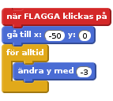
Testa ditt projekt
Klicka på den gröna flaggan, börjar Flappy i mitten på skärmen och faller ner?
Spara ditt projekt
Steg 2: Få Flappy att flyga
Sen ska vi få Flappy att flyga uppåt när du trycker på mellanslag.
Checklista
- Klicka på fliken Klädslar och döp kostymerna vingar upp och vingar ner.
Byt nu tillbaks till fliken Script och lägg till detta script:
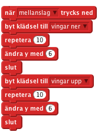
Testa ditt projekt
Klicka på den gröna flaggan, kan du kontrollera Flappy med mellanslagstangenten? Märker du att Flappy inte alltid flyger uppåt när du trycker mellanslag? Vi ska fixa det nu…
Spara ditt projekt
Steg 3: Fixa kontrollerna
Vi vill att Flappy ska reagera varje gång vi trycker mellanslag. Men när vi trycker på mellanslag så börjar Flappy två loopar med förflyttning. Om vi trycker på mellanslag igen innan dessa loopar är färdiga så ignoreras det andra trycket. För att lösa detta så ska vi använda en variabel för att räkna hur många vingslag vi behöver göra.
Checklista
- Flytta undan blocken under
när mellanslag trycks ned(vi kommer att använda dom snart igen.) - Skapa en ny variable
Enbart för denna spriteoch kalla denFlax. Lägg till följande script genom att dra in blocken som du tidigare drog åt sidan:
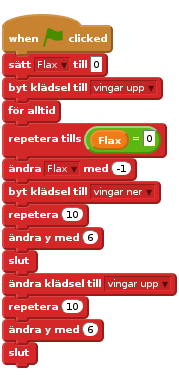
Och slutligen, lägg följande till din händelse
när mellanslag trycks ned: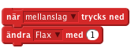
Testa ditt projekt
Klicka på den gröna flaggan, flaxar Flappy en gång för varje gång som du trycker på mellanslag?
Spara ditt projekt
Steg 4: Lägg till rören
Nu ska vi lägga till några hinder som Flappy kan flyga igenom.
Checklista
- Klicka på
Rita ny sprite - Döp klädseln till rör.
- Om klädseln är i
Bitmapslägeså klicka på knappenOmvandla till vektor. - Klicka på knappen
Zoom -så att du kan se hela rit-ytan. - Klicka på
Rektangel, välj en färg, och klicka på knappenIfylld rektangel. - Klicka och drag två lådor, en från uppe i mitten och en från nere i mitten, som på bilden nedan:

- Du kan tona dina rör genom att klicka på knappen
Färglägg en formoch klicka på knappenHorisontell gradient. Välj två nyanser av samma färg, en för förgrundsfärgen och en för bakgrundsfärgen. När du klicka för att fylla i formerna, så kommer färgen att skifta mellan de valda färgerna. - Döp din sprite Rör
Spara ditt projekt
Steg 5: Få rören att flytta på sig
Nu ska vi få rören att röra sig och placera sig slumpmässigt så att de skapar en hinderbana för Flappy.
Checklista
- Klicka på din Rör sprite och välj fliken
Script. Lägg till följande script:
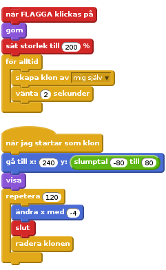
Testa ditt projekt
Klicka på den gröna flaggan, kommer det rör med hål i flygande på olika höjd? On du tycker att det är svårt att åka med Flappy genom hålen i rören så kan du göra hålen större genom att att redigera klädseln till spriten rör.
Spara ditt projekt
Steg 6: Upptäcka kollision med rören
För att göra spelet till en utmaning så behöver spelaren styra Flappy genom hålen i rören utan att röra rören eller kanterna på skärmen. Nu ska vi lägga till block som känner av om Flappy nuddar någonting.
Checklista
- Nu ska vi lägga till ett ljud när Flappy krockar. Klicka på spriten Flappy och sen på fliken
Ljud. - Klicka på knappen
Välj ljud från biblioteket. - Välj ett krock-ljud för Flappy. Ljudet screech är bra.
- Klicka på fliken
Script. Lägg till följande script:
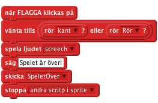
Klicka på spriten Rör och lägg till följande script:
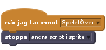
Testa ditt projekt
Klicka på den gröna flaggan, slutar spelet när Flappy nuddar ett rör eller kanten på skärmen?
Spara ditt projekt
Steg 7: Lägg till poängräkning
Nu ska vi lägga till så att spelaren får poäng varje gång som Flappy kommer igenom ett rör.
Checklista
- Vi lägger till ett ljud som ska spelas när Flappy får ett poäng. Klicka på spriten Rör och lägg till ett poäng-ljud. bird är ett bra val.
- Klicka nu på fliken
Script. - Skapa en ny variabel
För alla spritesoch döp den tillpoäng. - Lägg till ett block som sätter poängen till 0 när flaggan klickas på.
Lägg till följande block:
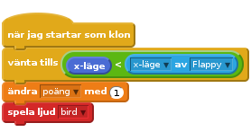
Testa ditt projekt
Klicka på den gröna flaggan, får spelaren poäng när Flappy flyger genom hålen i rören?
Spara ditt projekt
Saker att försöka
- På hur många sätt kan du göra spelet lättare eller svårare?
2.Grattis, du har slutfört det grundläggande spelet. Det finns dock fler saker som du kan göra med spelet. Testa gärna dom följande utmaningarna!
Utmaning 1: lägg till en high score
- Skapa en ny variabel och klicka i boxen
Moln variabel (lagrad på servern). Kalla variabelnhi-score. Notera att du måste vara en Scratcher för att få använda molndata. När spelet är över så kontrollera om du behöver sätta en ny highscore:
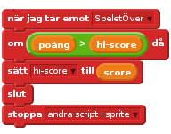
Testa ditt projekt
Klicka på den gröna flaggan, uppdateras highscore när du får högre poäng?
Spara ditt projekt
Utmaning 2: lägg till gravitation
När någonting faller under gravitation så faller det oftast inte med en konstant hastighet. I den här utmaningen ska vi göra så att Flappy faller som utav gravitation.
- Lägg till en ny variabel till Flappy (
Enbart för denna sprite) och kalla denstigning. Ändra Flappys script för fallandet:
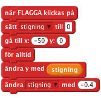
Ändra Flappys script för flaxande:
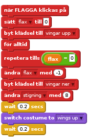
Testa ditt projekt
Klicka på den gröna flaggan, accelererar Flappy när han faller och flaxar?
Spara ditt projekt
Utmaning 3: falla ut från skärmen
Få Flappy att trilla ner till botten på skärmen när spelaren förlorar, innan spelet avslutas.
- Byt upp blocket
skicka SpeletÖvertill ett block medskicka Fall Lägg sen till följande script:
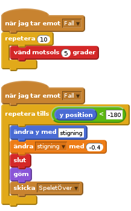
- Glöm inte att lägga till blocket
visaoch att återställa Flappys rotation när spelet startar om. Se också till att du inte stoppar andra script förrän du har skickat SpeletÖver
Testa ditt projekt
Klicka på den gröna flaggan, faller Fally ner och ut från skärmen efter att han träffar ett rör? Kommer Flappy tillbaks med korrekt rotation efter att ha startat om spelet?.
Spara ditt projekt
Bra jobbat, du är färdig! Nu kan du njuta av spelet!
Glöm inte att du kan dela med dig av ditt spel alla dina vänner och din familj genom att klicka på Dela uppe till höger i meny-panelen!